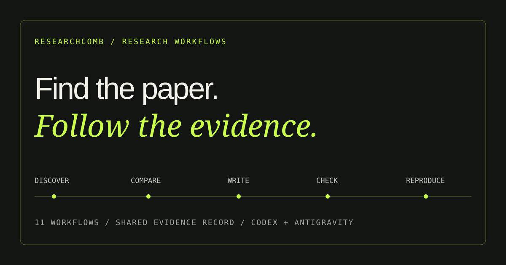

Project / 05
ResearchComb
Find the paper. Follow the evidence. I built an open-source skill bundle for Codex and Antigravity with twelve research workflows and an update command. It takes a topic through source discovery, comparison, drafting, critique, and citation checks while keeping a shared evidence record.

Workflow / Evidence path
Carry the evidence through the task.
- 01Frame the question
- 02Gather sources
- 03Record evidence
- 04Challenge claims
- 05Report limits
01 / Problem
A citation is only the start.
A working link identifies a source; it does not establish whether the source supports a nearby claim. Research tasks also lose context when discovery, comparison, drafting, and review happen separately.
02 / Design
Skills, with a shared evidence record.
The general researchcomb skill routes multi-stage requests. Twelve research workflows include comb-paper for a complete topic-to-paper task, alongside surveys, investigations, summaries, comparisons, code audits, implementation plans, manuscripts, critiques, citation checks, experiment loops, and replications. The separate comb-update command checks releases only when requested. Source and claim IDs carry forward between stages.
03 / Implementation
What the current bundle provides
- 01
Portable skill folders with supporting guidance for Codex and Antigravity
- 02
Evidence records separating source identity, access, and claim support
- 03
Explicit supported, qualified, contradicted, unsupported, and unverified claim statuses
- 04
Bounded experiment and reproduction workflows using an authorized local environment
- 05
Local regression fixtures and recorded native Codex workflow results
- 06
A one-request comb-paper workflow that saves paper.md, evidence.json, and checks.md, checks the requested word range, and marks incomplete work as partial
- 07
Scholarly search guidance covering Google Scholar, ResearchGate, Crossref, OpenAlex, Semantic Scholar, and relevant field sources; comb-paper calls for eleven sources and screened citation trails
- 08
A local completion checker for source records and manuscript length, plus a safe fetcher that checks DNS addresses and redirects before retrieving discovered links
Recorded on 8–9 October 2026
- 01
- 11 / 11 earlier workflow cases passed
- 02
- 4 / 4 local checker tests passed
- 03
- 567-word comb-paper test
What these results establish
- Earlier cases cover the original eleven workflows; the newer comb-paper case used two supplied synthetic excerpts. Eight research cases use synthetic fixtures.
- Earlier general discovery found twelve skills and routed four requests; this was not a discovery test of the current fourteen-skill bundle.
- An experiment kept an improvement and rejected a regression within its two-trial budget.
- A reproduction case correctly reported a mismatched claimed result as not reproduced.
- The comb-paper case preserved source IDs, recorded seven checked claims, and produced 567 body words within the requested 400–600 range. It did not browse or run experiments.
- The earlier long manuscript case produced 6,201 measured body words.
- Antigravity installation was checked; its behavioral tests remain unverified.
Development evidence
Inspect the workflows and checks.
Current limits
Verification depends on accessible sources and the host’s tools.
ResearchComb records inaccessible text and unchecked claims. The completion checker validates records and word counts; it cannot prove that searches happened or that citations support claims. Recorded live-search tests exposed unreliable direct-source reporting, so the host’s tool history still matters. The new paper test used supplied synthetic excerpts, not a live literature search. Passing tests do not guarantee research accuracy. Experiments require authorization, and recurring monitoring requires the host’s scheduler.